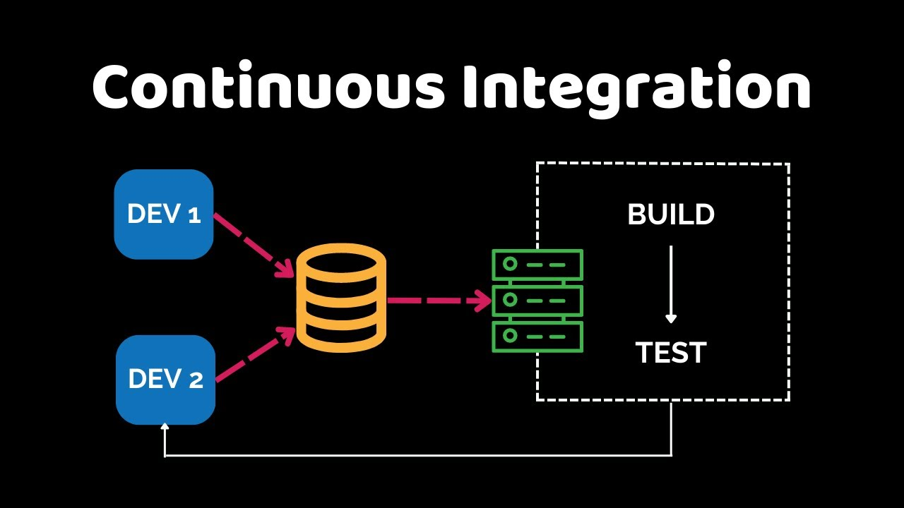
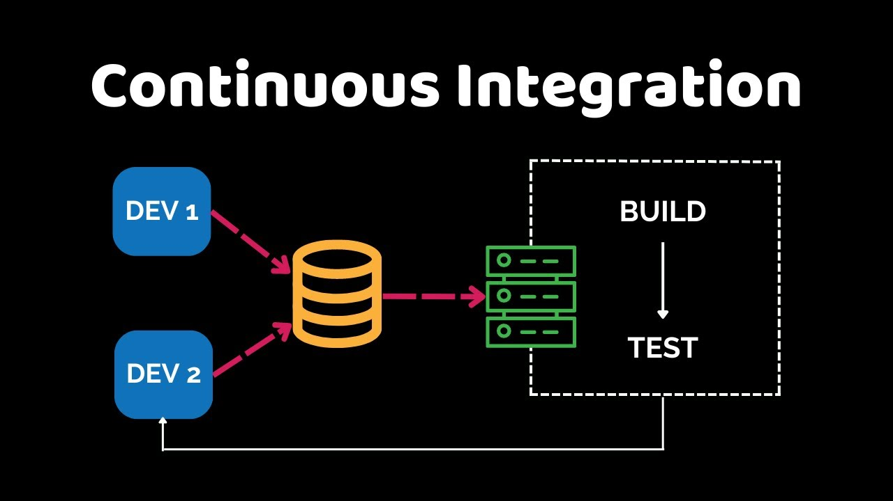

Hola estudiante, antes de realizar el examen te proporcionamos un panel de estudios
en la cual esta basado en los temas vistos durante el modulo 3. Asi que tomate tu
tiempo y estudia, buena suerte!.
validación y compilación del código a lo largo de todo el ciclo de desarrollo. Consiste en
un pipeline automatizado que se activa con cada cambio de código (commit), ejecutando pruebas
y análisis estático. El propósito principal es detectar defectos y conflictos lo más rápido y
temprano posible (Shift Left), asegurando que la rama principal de código sea siempre estable,
funcional y esté lista para ser desplegada.

en la cual esta basado en los temas vistos durante el modulo 3. Asi que tomate tu
tiempo y estudia, buena suerte!.
Módulo 3: Integración Continua (CI)
Concepto general
La Integración Continua (CI) es la disciplina de DevOps que se enfoca en automatizar lavalidación y compilación del código a lo largo de todo el ciclo de desarrollo. Consiste en
un pipeline automatizado que se activa con cada cambio de código (commit), ejecutando pruebas
y análisis estático. El propósito principal es detectar defectos y conflictos lo más rápido y
temprano posible (Shift Left), asegurando que la rama principal de código sea siempre estable,
funcional y esté lista para ser desplegada.

Importancia
- Minimiza el Costo de Corrección: Encontrar un defecto en minutos (durante la CI) es exponencialmente
más barato que encontrarlo en días o semanas. - Previene la Regresión: Las pruebas automatizadas actúan como un "Quality Gate" (Puerta de Calidad) que
prohíbe el paso del código que rompe las funcionalidades existentes. - Asegura la Reproducibilidad: Garantiza que el software se compile de manera consistente en un entorno
limpio, resolviendo el problema del "funciona en mi máquina". - Habilita la Entrega Continua (CD): Una rama principal estable ("verde") es el requisito fundamental para
poder automatizar el despliegue a producción.
Conceptos clave
| Concepto | Definición |
|---|---|
| Commit Frecuente | La disciplina cultural de fusionar cambios pequeños y constantes a la rama principal (varias veces al día). |
| Servidor CI | La herramienta automatizada (ej. Jenkins, GitLab CI) que monitorea el repositorio y ejecuta el pipeline. |
| Shift Left | La práctica de mover las pruebas y los chequeos de seguridad al inicio del ciclo de desarrollo. |
| Pruebas Unitarias | La prueba más rápida y de más bajo nivel que se ejecuta en CI para validar la lógica individual de componentes. |
| Artefacto Inmutable | El paquete binario (ejecutable) generado por el build que no debe ser modificado en ningún entorno posterior. |
| Feedback Rápido | La notificación casi instantánea al equipo sobre el estado (rojo/verde) del build. |
Ejemplo práctico: Flujo de la Falla ("Rojo")
- Desarrollador A: Hace un commit que, accidentalmente, tiene un error de sintaxis.
- Servidor CI: Detecta el push y comienza el build.
- Fase de Compilación: La compilación falla.
- Feedback Rápido: El pipeline se detiene y notifica al canal de Slack del equipo que el build está ROJO.
- Prioridad Máxima: El desarrollador A detiene su trabajo y revierte o corrige el commit para restaurar el estado
VERDE en minutos.